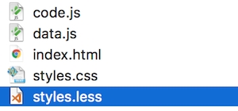
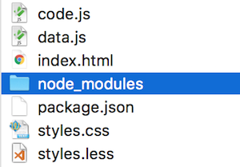
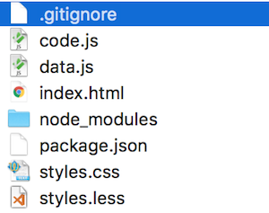
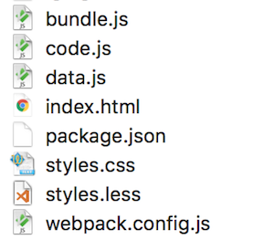
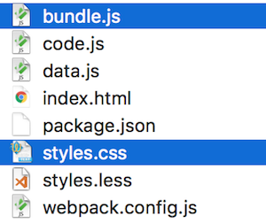

Enter the build step
Things're getting realCSS preprocessing
bells and whistles
Although CSS has grown more powerful, there is still a lot to be desired:
- variables
- computations
- mixins
- nested declarations
This has driven many to try to add a layer on top of CSS. The two most popular solutions are SASS and LESS.


Read more at http://sass-lang.com/ and http://lesscss.org/.
The idea is that we write in a language that compiles down to regular CSS.

In other words you will be editing a .less or .sass file, and from that generate a .css file that you serve to the client.
For example, this LESS code:
@bgcolor: #f938ab;
.sidebar {
background-color: @bgcolor;
& h2 {
width: 100% * 2 / 3;
}
}
...translates to this CSS:
.sidebar {
background-color: #f938ab;
}
.sidebar h2 {
width: 66.66666667%
}
Exercise - LESS
Goal: Style our app with LESS
Battleplan:
- ainstall LESS globally
- badd a LESS file
- cuse LESS syntax
- dcompile LESS to CSS
First we install LESS globally! Type this in a terminal:
npm install -g less
You might have to run the terminal as administrator to be allowed to do this.
Then try typing this in any terminal:
lessc -v
If you see a LESS version number, you're ok!
Now we need to add a LESS file! Simply copy the CSS file in your project, and give the copy the ending .less instead.

This is all pointless unless we use some LESS syntax!
Look up a feature you like (variables are easy), and use it in the LESS file!
Now we must generate the CSS file! In a terminal, navigate to the project folder and type:
lessc styles.less styles.css
You might have to tweak according to your exact file names.
After this command, notice that the styles.css file will change accordingly!
You'll redo this process every time you make a change to the LESS file.
(unless you add a watcher!)
You are done when...
- The styles are controlled from a LESS file
- The app still looks as expected in the browser
Package.JSON
The heart
Let's take a closer look at npm! We acces it with the npm command through Node.js:
$ npm
Usage: npm <command>
The npm revolves around the package.json file. Let's explore that! Specifically, we'll look at:
- ainstall packages globally
- binitiate a
package.jsonfile - ctrack dependencies
- dsemantic versioning
- edevelopment dependencies
- fscripts
To install a package you just type:
npm install react
This will generate a node_modules folder with react and all its
dependencies, if any.
Hint: You probably want to ignore this folder in your VCS
Packages can also be installed globally:
$ npm install -g eslint
We can setup a package.json file to track dependencies in our project, as well as do other configurations.
Getting started with a new project is simple:
npm init
This initializes the folder as an Node.js project by creating a package.json in it.
The result, after you have answered a bunch of questions, might look something like:
{
"name": "Install dependencies example",
"version": "1.0.0",
"description": "Project description",
"dependencies": {},
"devDependencies": {},
"scripts": {
"test": "echo \"We have no tests yet\""
},
"author": "Eric Lavesson",
"license": "ISC"
}
Using the --save flag we can track dependencies in our package.json.
npm install --save react
- As of npm 5.0.0
--saveis the default behaviour.
Here's the package.json file after the saved dependency (shortened for convenience):
{
"dependencies": {
"react": "^15.3.2"
},
"devDependencies": {},
"scripts": {
"test": "echo \"We have no tests yet\""
}
}
Note how react is now listed as a dependency.
npm uses Semantic versioning (also called semver)
A "version" is described as a string, such as 1.2.3, where:
1 - MAJOR (incompatible API changes)
2 - MINOR (new functionality, backwards compatible)
3 - PATCH (patches and bugfixes)
In your package.json (and also when installing, you can specify a
semver, together with one of several comparators. A few common examples
include:
>=1.2.3 # Anything greater than or equal to this version
=1.2.3 # Exactly this version
^1.2.3 # Accept the latest major version
# (1.3.0 OK, but not 2.0.0)
~1.2.3 # Accept the latest minor version
# (1.2.4 OK, but not 1.3.0)
There's a giant heap of these. Check the following URL for the spec:
We can mark some dependencies as development-specific with the --save-dev flag:
npm install --save-dev mocha
Let's look at the resulting package.json:
{
"dependencies": {
"react": "^15.3.2"
},
"devDependencies": {
"mocha": "^3.1.2"
},
"scripts": {
"test": "echo \"We have no tests yet\""
}
}
I just cloned a repo with a package.json file. Since the node_modules folder is ignored, how do I actually install the dependencies?
Simple. You just run npm install!
This command will download all the dependencies and devDependencies and place them in a node_modules folder.
Runnable scripts can be added as a scripts property in package.json
{
"dependencies": {},
"devDependencies": {},
"scripts": {
"printme": "echo \"This is a meaningless script\""
}
}
Once a script is registered like that, we can run it like this:
npm run printme
This just runs our pointless command that we defined in printme. You'll use it for more useful stuff in the build step coming in later!
Exercise - Build step
Plugging in the pipe
Goal: define building and dependencies in the project
Currently our project has two big downsides:
- LESS must be globally installed
- You must know how to generate the CSS file
Let's fix this!
- aAdd a
package.jsonfile - bAdd
lessas a local devDep - cAdd a
.gitignorefile to prevent tracking ofnode_modules - dAdd a buildscript
Create a package.json by typing...
npm init
...in the root of your project!
Now let's add less as a local development dependency:
npm install --save-dev less
Because we have local dependencies, we now have a node_modules folder.

Since this is just 3rd party code, we don't want to track it with Git!
We prevent this by adding a .gitignore file in the root of our folder.

This file should contain paths to all files and directories that we wish to ignore. So far, that's just the node modules directory!
node_modules
Let's now register a local command to generate our less file:
{
"scripts": {
"styles": "lessc styles.less styles.css"
}
}
Of course, make sure the names match your CSS file.
Now, in a terminal in the project folder, try...
npm run styles
...and make sure the CSS file is properly regenerated!
You are done when...
- LESS is locally installed (in
node_modules/less) node_modulesisn't tracked by Git- Typing
npm run stylesregenerates the CSS
Webpack
Time to get to know one of the most important tools:

Webpack solves a whole range of problems:
- ait lets us use modules...
- bbecause it bundles our code into a single file
- cit can also do other transpilings
Webpack lets us use Node module syntax in our code. This means that instead of splitting our code into files and then including them all in script elements (which means they all execute in the same scope), we can use proper modules!
So instead of creating a global variable in data.js...
let movieData = {
title: 'Inception', // etc
};
...and then magically be able to reference that in code.js...
renderMovie(movieData);
...we can explicitly export it in data.js...
module.exports = {
title: 'Inception', // etc
}
...and import it in code.js:
let movieData = require("./data");
renderMovie(movieData);
Note that we have to write the path as "./data".
If we write it as "data", npm will assume we mean a 3rd party module within node_modules and look there instead!
Working with modules in this way has many advantages;
- It becomes clear what a file exports and imports
- Files are executed in separate scopes
- Webpack can bundle it all into a single file, which we'll soon see!
Note that there is also an ES6 version of the module syntax. In data.js we'd export it like so...
export const movieData = {
title: 'Inception', // etc
};
...and then in code.js we'd import like this:
import {movieData} from './data';
renderMovie(movieData);
The bundling into a single file is at the core of Webpack. It requires us to use a module setup as described above.
With such as setup we'd point Webpack to the entry file. It'll then start there, dynamically follow all require calls, and bundle up everything into a single file.
We do this in a configuration file with the magical name webpack.config.js. This file should export a config object:
module.exports = {
entry: './code.js',
output: {
filename: 'bundle.js'
}
};
There are of course many more config options!
Via plugins, Webpack can also do a whole bunch of other conversions while it's at it. This might include...
- turning smart JS to dumb via Babel or something similar
- inlining images
- minifying/uglifying
- dealing with text resources
- ...and a whole bunch of other things!
Exercise - Webpack
Goal: bundle our code with webpack
Here's the plan!
- aturn
data.jsinto exported - badd
jqueryas local dependency - cadd
webpackas local development dependency - dconfigure webpack
- eadd script to run webpack
- fupdate
index.html
Lots of steps, but don't fret - most of them are very simple, promise! :)
Right now data.js simply declares a variable which we'll then magically use in another file.
Let's stop this, and instead make data.js explicitly export the variable! There are code examples in the previous section.
Then turn your attention to code.js and make it import the variable from data.js, instead of just assuming that the variable is magically present.
Let's add jQuery as a local dependency!
npm install --save jquery
Again you have to update code.js to import jquery instead of just assuming it exists.
Next we need to import webpack as a local development dependency!
npm install --save-dev webpack
The configuration for webpack lives in a separate webpack.config.js file.
Add such a file, and see the former section for what it should contain!
Now that webpack is present and configured we can add a script to package.json to run it. Let's call it bundle!
"scripts": {
"styles": "lessc styles.less styles.css",
"bundle": "webpack"
},
Try it by typing npm run bundle in the terminal, and see if bundle.js appears as expected!
As the very final step, let's update index.html to use our new setup.
This means...
- removing all existing script elements
- adding a new one for
bundle.js
You are done when...
- Doing
npm run bundlegenerates abundle.js - That's the only script file in
index.html - The app still works like before
Distribution files
Made to order
Two of these files are special. Which?

These! They alone are generated from the rest:

We don't want to track generated files, and we don't really want to mix them with our source files.
But, it is the generated files that we want to serve to the client, and not our source files!
This is what a proper build step should take care of; it should generate a directory containing everything the client needs. This directory should not contain anything not needed, but only the stuff that is needed to run the app.
And, by peculiar chance, you'll now get to set up generating such a folder! :)
Exercise - Distribution
An ACTUAL build step, at last!
Goal: Have a deployable distribution folder without source files
Here's the plan:
- atweak webpack to output into distribution folder
- btweak less to output into distribution folder
- cadd script to copy
index.htmlinto distribution folder - dmake Git ignore distribution folder
- eadd build script that runs all other scripts
We need to change webpack so that it outputs the bundle into the distribution folder instead.
Simple change the output filename into distribution/bundle.js!
Similarly, tweak the less script to output to distribution/styles.css instead of just styles.css.
We want to keep index.html among our tracked source files.
But at the same time we need it inside the distribution folder!
We solve this via adding a simple copying script to package.json:
"copyindex": "cd index.html distribution/index.html"
Run npm run copyindex in the terminal to see if it works!
The distribution folder is now full of generated files, which we don't want to track.
Add the whole folder to the .gitignore file!
As a final step, let's add a build script that runs all other scripts.
"build": "npm run bundle && npm run less && npm run copyindex"
Try it out, and see if the distribution folder is populated as expected.
You are done when...
- There's a
distributionfolder - That folder contains no source files
- You can copy just that folder somewhere else and the app still works